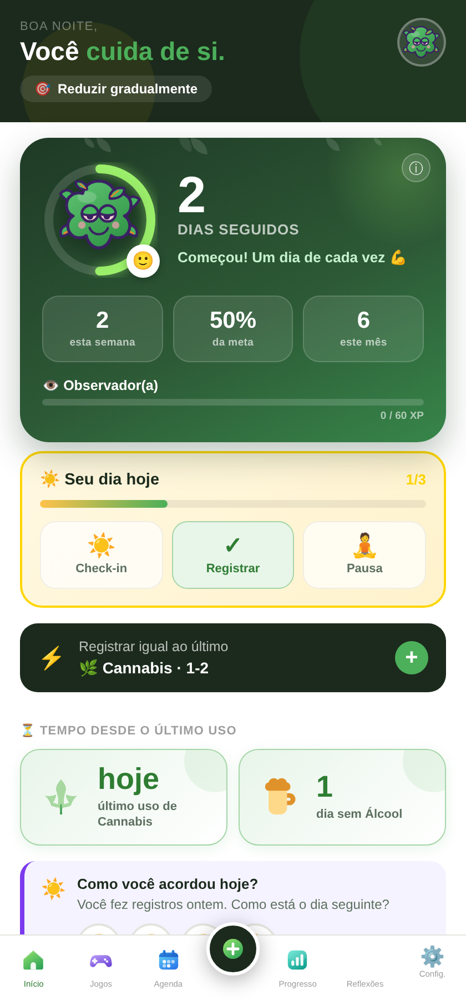
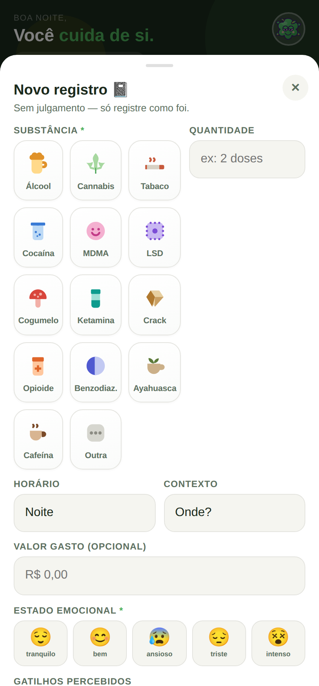
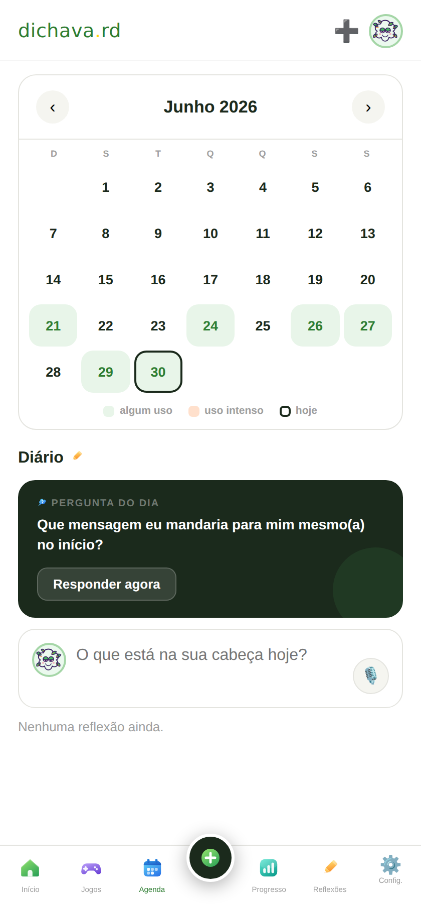
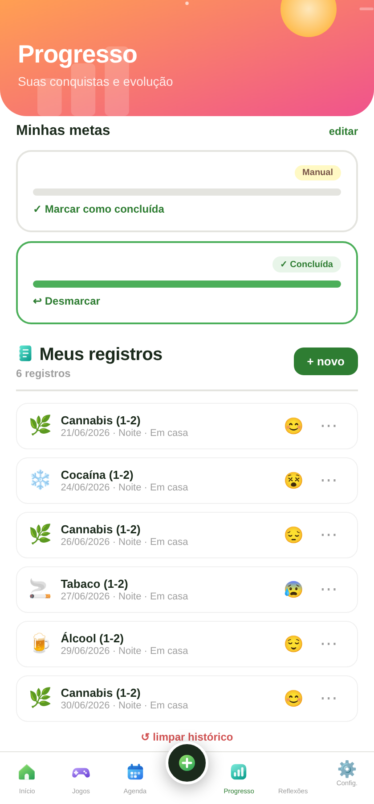
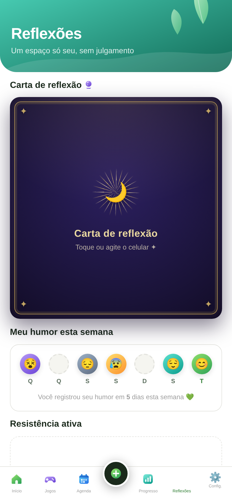
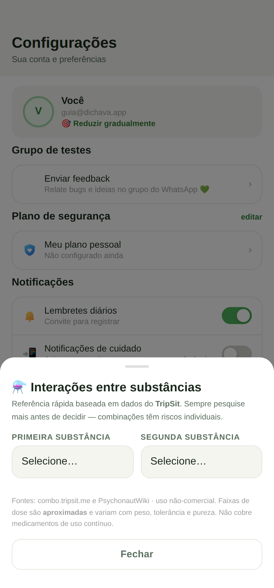

Acompanhamento pessoal na lógica da redução de danos. Um passeio por todas as telas. 🌿
Bem-vindo(a) 💚
Este guia mostra todas as funcionalidades do app, com prints de cada tela. Não precisa decorar nada — o dichava.app foi feito pra ser explorado no seu tempo. Use isto como mapa quando bater dúvida.
Primeiros passos

🏠 Tela Início
Seu painel de cuidado
Tudo começa aqui. De cima pra baixo você encontra:
Dias seguidos e uma frase de incentivo, com seu avatar.
Check-in de humor — registre como está em 1 toque.
Seu dia hoje — pequenas tarefas (check-in, registrar, pausa).
Tempo desde o último uso por substância.
Cards de acesso rápido para todos os recursos.

➕ Registrar
Registrar um uso
Toque no + para registrar. Você informa a substância (ícones ilustrados), quantidade, período, contexto e emoção.
Antes de salvar, aparece uma tela de confirmação — nada é registrado por engano. E se você passar do seu limite, o app dá um aviso gentil, nunca um bloqueio.
Acompanhar & refletir

📅 Agenda & Diário
Seu calendário e diário
Calendário colorido por dia, com legenda — toque para editar.
Diário livre com ditado por voz.
Pergunta do dia adaptada ao seu objetivo.
Meus registros, com editar e apagar.

📊 Progresso
Progresso & conquistas
Acompanhe sua evolução sem cobrança:
Minhas metas — se preenchem sozinhas conforme você registra.
Insights do seu padrão (horários, gatilhos, gasto estimado…).
Conquistas — medalhas que você desbloqueia.
Histórico completo de registros.

🔮 Reflexões
Carta de reflexão
Uma carta no estilo tarô, dourada. Toque ou agite o celular para virar e receber uma pergunta com um texto que aprofunda a reflexão.
Outra · Responder · Compartilhar (vira imagem pra postar).
Jogos de foco (como o Flappy Marola) pra distrair a fissura.
Trilha de habilidades que desbloqueia extras com constância.

⚙️ Configurações
Sua conta e preferências
Enviar feedback direto pro grupo de testes 💚
Notificações de cuidado (push), com limites de alerta.
Modo escuro e Modo discreto (vira "Diário").
PIN de bloqueio, objetivo & metas.
Backup, restaurar e exportar dados.
🔔 Notificações de cuidado
Em Configurações → Notificações de cuidado, você ativa avisos que chegam mesmo com o app fechado — mensagens de acolhimento conforme a substância, os dias desde o último uso e seu objetivo. No máximo 1 por dia, sem spam.
iPhone: instale o app na Tela de Início e aceite a permissão — só assim o push funciona (limitação da Apple).
🛡️ Privacidade
Seu histórico fica no seu aparelho e é sincronizado com o servidor próprio do projeto (para backup entre aparelhos e as notificações). Nada é compartilhado com terceiros, e você pode exportar ou apagar quando quiser. Há ainda PIN e Modo discreto para mais privacidade no dia a dia.
Lembrete sempre válido: o dichava.app é um recurso de apoio e não substitui acompanhamento profissional. Em emergências, ligue SAMU 192. Apoio emocional 24h: CVV 188.